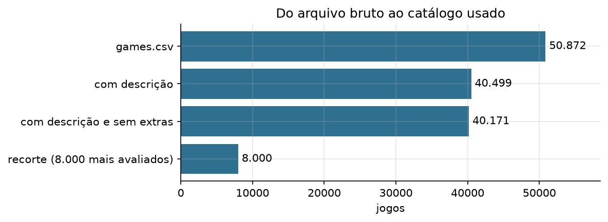
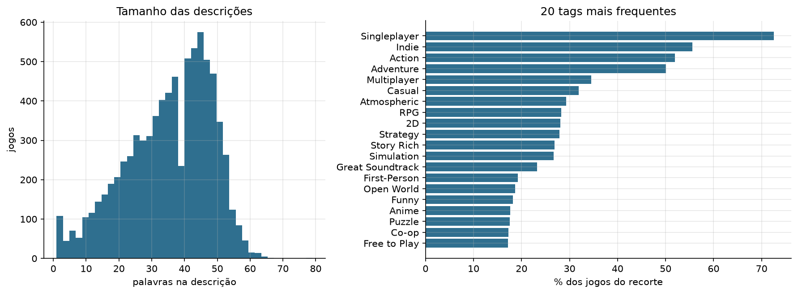

Este relatório apresenta o Steam Style, um sistema que recomenda jogos parecidos com os que o usuário já aprovou, usando apenas as descrições e as tags de cada jogo. Os dados vêm do conjunto público Game Recommendations on Steam, com 50.872 jogos e 41,2 milhões de avaliações. Cada jogo é representado por um vetor TF-IDF implementado sem bibliotecas prontas, com peso maior para as tags. O perfil do usuário soma os vetores dos jogos aprovados e subtrai os reprovados, e a similaridade do cosseno ordena o Top-N, com uma explicação dos termos que mais contribuíram para cada item. A avaliação offline usou 500 usuários sorteados com semente fixa, divisão temporal dos 20% mais recentes e uma validação adicional com leave-one-out. O modelo obteve Recall@10 de 0,0358 e nDCG@10 de 0,0265, contra 0,0176 e 0,0085 do baseline de mais populares e zero do aleatório; a vantagem é significativa contra o aleatório, mas não contra os populares (bootstrap pareado, IC 95%). O modelo cobre 12% do catálogo, contra 0,2% dos populares, mas tem a menor diversidade intra-lista, sinal de superespecialização. A análise exploratória mostrou que os jogos mais avaliados da base (Counter-Strike: GO, Dota 2, GTA V) não têm descrição nem tags, o que limita qualquer abordagem baseada em conteúdo neste conjunto.
Palavras-chave: sistemas de recomendação; filtragem baseada em conteúdo; TF-IDF; similaridade do cosseno; jogos eletrônicos.
Lojas digitais de jogos oferecem dezenas de milhares de títulos, e encontrar um jogo novo que combine com o próprio gosto é difícil sem algum tipo de recomendação. Este trabalho constrói, avalia e apresenta um sistema de recomendação para esse cenário usando filtragem baseada em conteúdo (FBC): recomendam-se itens parecidos com aqueles de que o usuário já gostou, comparando as características dos próprios itens com um perfil montado a partir do histórico do usuário (PAZZANI; BILLSUS, 2007; LOPS; DE GEMMIS; SEMERARO, 2011).
Jogos são um domínio adequado à FBC porque cada título é bem descrito por tags atribuídas pela comunidade (“Survival”, “Roguelike”, “Story Rich”), que resumem gênero, mecânica e clima. Além disso, a matriz usuário × jogo é extremamente esparsa (seção 2.3), situação em que métodos colaborativos sofrem, e a FBC permite explicar cada recomendação pelos termos em comum com o perfil. O sistema, chamado Steam Style, implementa sem bibliotecas prontas de recomendação ou de linguagem natural o pipeline clássico: pré-processamento, TF-IDF, perfil do usuário, similaridade do cosseno, Top-N e explicação. Ele é comparado a dois baselines com um protocolo temporal sem vazamento de dados, e todos os resultados podem ser reproduzidos com um único comando (python scripts/reproduzir.py).
Os dados vêm do conjunto público Game Recommendations on Steam (KOZYRIEV, 2023): games.csv (50.872 jogos, com título, lançamento e preço), games_metadata.json (descrição e tags) e recommendations.csv (41.154.794 avaliações binárias “recomendo/não recomendo” de 13,8 milhões de usuários, de 2010 a 2022). Usuários aparecem apenas por um identificador numérico, sem dados pessoais. A análise exploratória completa está em notebooks/eda.ipynb.
Preço e data estão sempre preenchidos, mas 20,4% dos jogos não têm descrição. O achado mais importante é quais jogos não a têm: 1.229 títulos sem descrição e sem tags concentram 61,8% de todas as avaliações da base, entre eles Counter-Strike: Global Offensive, PUBG, Dota 2, GTA V e Terraria. Sem nenhum texto, esses jogos não podem ser representados por conteúdo. Os outros 9.144 jogos sem descrição, mas com tags, são quase todos DLCs (1,2% das avaliações).
A Figura 1 mostra os filtros até o catálogo usado: exige-se descrição; removem-se pelo título itens que não são jogos (trilhas sonoras, DLCs, passes de temporada, prólogos, servidores dedicados); e mantêm-se os 8.000 jogos mais avaliados, com desempate pelo identificador. O número de avaliações é usado só nesse recorte, nunca na similaridade.

Fonte: Elaborado pelos autores (2026), a partir de Kozyriev (2023).
As descrições são curtas, com mediana de 37 palavras, enquanto as tags são ricas: 16,6 por jogo em média, de um vocabulário de 439, e nenhum jogo do recorte está sem tags (Figura 2). Essa assimetria motivou o peso maior das tags (seção 3.1). As tags mais comuns (Singleplayer, em 73% dos jogos, Indie, Action) quase não distinguem jogos, e o fator IDF reduz o peso delas. O preço é fortemente assimétrico (mediana de US$ 9,99; 20,3% gratuitos; assimetria de 1,53), e a transformação log(1 + preço) reduz a assimetria para −0,55. Os anos vão de 1997 a 2023, com mediana em 2018. Nota média e número de avaliações não são usados como atributos, por resumirem a opinião de outros usuários.

Fonte: Elaborado pelos autores (2026), a partir de Kozyriev (2023).
As avaliações são predominantemente positivas (85,8%) e concentradas: 1% dos jogos recebe 55,6% das interações. A mediana é de uma avaliação por usuário, só 13,9% dos usuários avaliaram cinco jogos ou mais e a matriz usuário × jogo tem densidade de 0,008%. Como não há como separar treino e teste com um ou dois jogos, a avaliação usa 500 usuários com ao menos cinco jogos, sorteados com semente 42 (6.214 avaliações). Ao exigir que o jogo esteja no catálogo, 2.509 avaliações saem por falta de descrição e só 17 pelo filtro de extras, restando 3.688 avaliações de 483 usuários, acima dos mínimos do trabalho (500 itens e 50 usuários).
A descrição é convertida para minúsculas, acentos e pontuação são removidos e descartam-se tokens com até dois caracteres e stopwords em inglês e português, incluindo palavras do domínio (game, play). Aplica-se então um stemming leve por remoção de sufixos, inspirado em Porter (1980). O tratamento reduz os tokens em 41% e o vocabulário em 20%. Cada tag é mantida como um termo inteiro (tag:open_world). O vetor TF-IDF de cada jogo d (SALTON; BUCKLEY, 1988; MANNING; RAGHAVAN; SCHÜTZE, 2008) é calculado em código próprio pela Equação 1, em que ft,d é a frequência do termo, N o número de jogos e dft o número de jogos com o termo. Cada tag entra com frequência 4, pesando mais que uma palavra incidental, e o vetor é normalizado pela norma L2.
Numa variante, preço e ano entram no mesmo vetor como duas dimensões extras: ausentes recebem a mediana, o preço passa por log(1 + x) e ambos são padronizados por z-score, limitados a ±3 e multiplicados por um peso. O z-score centrado faz o cosseno favorecer jogos do mesmo lado da média que o perfil, enquanto uma escala min-max, toda positiva, favoreceria sempre os mais caros ou mais novos.
O perfil p usa apenas o treino: soma os vetores dos jogos aprovados (P), subtrai os dos reprovados (R) e é normalizado (Equação 2). Como os vetores são unitários, isso equivale a uma média com peso +1 para avaliações positivas e −1 para negativas, já que a base só tem avaliações binárias. Para vetores unitários, o cosseno se reduz ao produto escalar.
O cálculo percorre um índice invertido (termo → jogos que o contêm), pontuando só os jogos com algum termo em comum com o perfil. Os jogos já avaliados são excluídos, os candidatos com cosseno positivo são ordenados de forma decrescente, com desempate pelo identificador, e os N primeiros formam a recomendação.
Como o cosseno é uma soma de contribuições por termo (pt · vd,t), a explicação mostra exatamente os termos de maior contribuição positiva, com prioridade para as tags, e o jogo do histórico mais parecido com o item. A explicação reflete, portanto, o cálculo feito. A Tabela 1 decompõe um caso real da interface: quem aprova só Unturned recebe The Fifth Day em 1º lugar, com cosseno 0,4603, exibido como “Em comum: Post-apocalyptic, Zombies, Massively Multiplayer · Lembra Unturned”. O valor é uma similaridade, não uma probabilidade de gostar.
| Termo em comum | Peso no perfil | Peso no item | Contribuição |
|---|---|---|---|
| tag Post-apocalyptic | 0,257 | 0,239 | 0,0613 |
| tag Zombies | 0,255 | 0,238 | 0,0606 |
| tag Massively Multiplayer | 0,237 | 0,221 | 0,0525 |
| tag Crafting | 0,236 | 0,220 | 0,0518 |
| outros 11 termos em comum | — | — | 0,2341 |
| Cosseno (soma) | 0,4603 |
Fonte: Elaborado pelos autores (2026).
A interface em Streamlit (streamlit run frontend/app.py) tem dois modos: marcar jogos de que se gostou, e opcionalmente de que não se gostou, o que funciona como questionário inicial para o cold start; ou escolher um usuário real da amostra. Em ambos, o Top-N (5 a 20) aparece com capa, tags, pontuação e explicação. Uma opção liga a variante com preço e ano, e o mesmo núcleo é exposto por uma API FastAPI opcional.
No protocolo principal, as avaliações de cada usuário com ao menos cinco jogos são ordenadas por data e as 20% mais recentes vão para o teste (3.099 avaliações de treino e 589 de teste), simulando o uso real: o sistema conhece o passado e tenta prever o que o usuário aprovou depois. Como validação adicional, usou-se leave-one-out: reserva-se a última avaliação positiva e descartam-se as posteriores (209 usuários). Um jogo é relevante quando o usuário o recomendou no teste (is_recommended = True), único sinal explícito de gosto na base, que não tem notas em escala. Entram nas médias os 185 usuários com ao menos um relevante no teste (2,6 em média).
O perfil e o ranking de popularidade usam só o treino. Todos os métodos compartilham o mesmo catálogo candidato (8.328 jogos: o recorte mais os jogos da amostra que passam pelos mesmos filtros, incluídos apenas pelos metadados) e excluem os jogos do treino de cada usuário. Foram comparados: aleatório (semente 42), mais populares (mais avaliações positivas no treino), conteúdo (seções 3.1 e 3.2) e a variante conteúdo + preço/ano. Para N = 5 e 10, calculam-se por usuário Precision@N (fração do Top-N relevante), Recall@N (fração dos relevantes no Top-N), nDCG@N com ganho binário e desconto 1/log2(posição + 1) (JÄRVELIN; KEKÄLÄINEN, 2002) e Hit@N. Além da acurácia, medem-se a cobertura do catálogo e a diversidade intra-lista (1 menos o cosseno médio entre pares do Top-10).
As diferenças são testadas por bootstrap pareado por usuário (EFRON; TIBSHIRANI, 1993), com 10.000 reamostragens e intervalo de confiança de 95%. O peso da variante foi escolhido sem tocar no teste: o treino foi dividido de novo pelo mesmo protocolo (434 avaliações de validação, 144 usuários), e o peso com maior nDCG@10 entre 0 e 32 foi 12. Todos os parâmetros estão fixados nos scripts, e python scripts/reproduzir.py refaz amostra, avaliações, figuras e testes.
A Tabela 2 reúne as métricas do protocolo temporal. O conteúdo lidera quase todas as métricas de acerto, com Recall@10 duas vezes maior que o dos populares (0,0358 contra 0,0176) e nDCG@10 três vezes maior (0,0265 contra 0,0085). O aleatório não acertou nenhum jogo. Os valores absolutos são baixos, como esperado, com mais de 8 mil candidatos e cerca de 2,6 jogos relevantes por usuário.
| Modelo | P@5 | R@5 | nDCG@5 | P@10 | R@10 | nDCG@10 | Hit@10 | Cobert. | Divers. |
|---|---|---|---|---|---|---|---|---|---|
| Aleatório | 0,0000 | 0,0000 | 0,0000 | 0,0000 | 0,0000 | 0,0000 | 0,0000 | 0,2004 | 0,9472 |
| Mais populares | 0,0054 | 0,0149 | 0,0075 | 0,0032 | 0,0176 | 0,0085 | 0,0324 | 0,0024 | 0,8540 |
| Conteúdo (TF-IDF) | 0,0065 | 0,0221 | 0,0217 | 0,0054 | 0,0358 | 0,0265 | 0,0541 | 0,1219 | 0,6992 |
| Conteúdo + preço/ano | 0,0076 | 0,0232 | 0,0192 | 0,0043 | 0,0241 | 0,0190 | 0,0432 | 0,1118 | 0,7469 |
Fonte: Elaborado pelos autores (2026). Arquivo: results/metricas_temporal.csv.
A Tabela 3 mostra se as diferenças são reais. Contra o aleatório, o conteúdo é significativamente melhor nas três métricas. Contra os populares, fica à frente em todas, mas nenhuma diferença é significativa a 5%: no Hit@10, a vantagem equivale a 10 contra 6 usuários com acerto entre 185. O caso mais próximo é o nDCG@10 (p ≈ 0,07), coerente com o conteúdo acertar em posições mais altas.
| Comparação | Métrica | Diferença | IC 95% | p |
|---|---|---|---|---|
| Conteúdo vs. populares | Recall@10 | +0,0182 | [−0,0104; 0,0486] | 0,215 |
| Conteúdo vs. populares | nDCG@10 | +0,0180 | [−0,0015; 0,0408] | 0,073 |
| Conteúdo vs. populares | Hit@10 | +0,0216 | [−0,0162; 0,0595] | 0,348 |
| Conteúdo vs. aleatório | Recall@10 | +0,0358 | [0,0135; 0,0622] | < 0,001 |
| Conteúdo vs. aleatório | nDCG@10 | +0,0265 | [0,0090; 0,0485] | < 0,001 |
| Conteúdo vs. aleatório | Hit@10 | +0,0541 | [0,0216; 0,0865] | < 0,001 |
Fonte: Elaborado pelos autores (2026). Arquivo: results/significancia_temporal.csv.
Cobertura e diversidade mostram o outro lado. Os populares recomendam quase a mesma lista para todos (cobertura de 0,24%), e o conteúdo alcança 12% do catálogo, mas tem a menor diversidade intra-lista (0,70): itens parecidos aparecem juntos, a superespecialização típica da FBC. O leave-one-out repete a ordenação conteúdo > populares > aleatório (Recall@10 de 0,0287, 0,0191 e 0,0048; nDCG@10 de 0,0198, 0,0084 e 0,0030), com ainda menos acertos (6 contra 4 usuários) e sem diferença significativa contra os populares (nDCG@10: +0,0113; IC 95% [−0,0068; 0,0321]). As tabelas completas estão em results/.
Na validação, o peso 12 elevou o nDCG@10 de 0,0239 para 0,0299, mas o ganho não se confirmou no teste: a variante perdeu acerto nos dois protocolos (Recall@10 de 0,0358 para 0,0241 no temporal), ainda que sem significância (nDCG@10: −0,0075; IC 95% [−0,0167; 0,0000]). A vantagem na validação equivalia a uns dois usuários entre 144, dentro do ruído. Em troca, a variante elevou a diversidade de 0,70 para 0,75, ao aproximar jogos de gêneros diferentes com perfil comercial parecido. O modelo só com texto e tags, que já era o do trabalho antes do experimento, foi mantido como principal, pois trocá-lo com base no teste seria vazamento.
O usuário #5170533 aprovou jogos de ação e RPG (Far Cry 3, Darksiders III, Bayonetta, a série Gujian) e, no teste, Dishonored 2, Nioh 2 e Fate Seeker II. O Top-10 traz jogos de artes marciais e mundo aberto, e Fate Seeker II aparece em 4º lugar, explicado pelas tags Martial Arts, Hack and Slash e RPG. É um acerto coerente. O usuário #5611614 aprovou jogos de guerra (Day of Infamy, Red Orchestra 2, Rising Storm 2), e Post Scriptum, aprovado no teste, aparece em 7º. Porém, os dez itens têm a mesma explicação (Military, War, Historical), e nada lembra LEGO The Hobbit ou The Walking Dead, que ele também aprovou: um acerto acompanhado de superespecialização.
O usuário #767 é um caso de erro. Ele aprovou The Witcher, Serious Sam Classic e Half-Life 2, reprovou Serious Sam 3 e, no teste, aprovou Dragon Age: Origins. Seis dos dez itens recomendados são da franquia Half-Life, que compartilha tags como Silent Protagonist e Classic. Com três jogos positivos, um deles dominou o perfil, e o RPG de fantasia que ele procurava só aparece de forma indireta (Fable, Game of Thrones). O erro expõe dois problemas: perfis curtos são instáveis, e versões quase duplicadas de uma franquia ocupam várias posições do Top-N. Os três casos completos estão em results/exemplos_qualitativos.md.
Dependência dos metadados. É a limitação mais forte. Os jogos que concentram 62% das avaliações não têm descrição nem tags e não podem ser recomendados nem entrar no perfil; 40% das avaliações da amostra se perderam por isso, e títulos como Terraria e Portal 2 não aparecem na interface. A solução seria completar os metadados com uma fonte externa, como a API da loja Steam. Superespecialização. O conteúdo tem a menor diversidade, e há listas inteiras com a mesma explicação ou dominadas por uma franquia; reordenar o Top-N por relevância marginal máxima, MMR (CARBONELL; GOLDSTEIN, 1998), é o próximo passo natural. Cold start e perfis curtos. O sistema precisa de ao menos um jogo aprovado; a escolha manual atende o usuário novo, mas com poucos jogos um título domina o perfil.
Baseline de populares e tamanho da amostra. O conteúdo supera os populares sem significância, em linha com a força desse baseline em tarefas Top-N (CREMONESI; KOREN; TURRIN, 2010); uma amostra maior (--usuarios 2000) daria mais poder ao teste. Protocolo e heurísticas. O teste temporal mede a recuperação de avaliações futuras, não a satisfação com recomendações novas; avaliações também dependem de preço, promoções e amigos, e a relevância binária ignora a intensidade do gosto. O filtro de extras é heurístico e deixou passar cerca de 15 demos e servidores de teste, que surgem como quase cópias do jogo original.
Este trabalho implementou à mão um sistema de recomendação de jogos por filtragem baseada em conteúdo, com pré-processamento, TF-IDF com tags ponderadas, perfil com avaliações positivas e negativas, cosseno, Top-N sem itens consumidos e explicações que decompõem o próprio cálculo. Com protocolo temporal sem vazamento, o sistema superou significativamente o aleatório e ficou à frente dos mais populares em todas as métricas de acerto, embora sem significância nesta amostra, e cobriu 50 vezes mais do catálogo que eles. A análise também mostrou os limites da abordagem: a qualidade do sistema depende dos metadados, e as listas tendem à superespecialização. Como próximos passos, propõe-se completar as descrições por fonte externa, aplicar MMR, comparar o TF-IDF com embeddings semânticos e avaliar com mais usuários.
| Membro | Papel principal | Atividades realizadas |
|---|---|---|
| Danilo Cavalcante | Engenharia de dados | Análise exploratória, reprodução com um único comando, variante com preço e ano e redação do relatório. |
| Rennan Kauê | Modelagem | Catálogo, pré-processamento, TF-IDF, perfil, cosseno, Top-N, explicações e interface Streamlit. |
| Thiago Ramon | Avaliação | Escolha do dataset, divisões de teste, métricas, baselines, bootstrap e testes automatizados. |
| Gabriel Ribeiro | Produto e documentação | Slides, vídeo de demonstração e organização da apresentação. |
Fonte: Elaborado pelos autores (2026), com base no histórico de commits.
CARBONELL, J.; GOLDSTEIN, J. The use of MMR, diversity-based reranking for reordering documents and producing summaries. In: ANNUAL INTERNATIONAL ACM SIGIR CONFERENCE ON RESEARCH AND DEVELOPMENT IN INFORMATION RETRIEVAL, 21., 1998, Melbourne. Proceedings [...]. New York: ACM, 1998. p. 335-336.
CREMONESI, P.; KOREN, Y.; TURRIN, R. Performance of recommender algorithms on top-N recommendation tasks. In: ACM CONFERENCE ON RECOMMENDER SYSTEMS, 4., 2010, Barcelona. Proceedings [...]. New York: ACM, 2010. p. 39-46.
EFRON, B.; TIBSHIRANI, R. J. An introduction to the bootstrap. New York: Chapman & Hall, 1993.
JÄRVELIN, K.; KEKÄLÄINEN, J. Cumulated gain-based evaluation of IR techniques. ACM Transactions on Information Systems, New York, v. 20, n. 4, p. 422-446, 2002.
KOZYRIEV, A. Game recommendations on Steam. [S. l.]: Kaggle, 2023. Conjunto de dados. Disponível em: https://www.kaggle.com/datasets/antonkozyriev/game-recommendations-on-steam. Acesso em: 15 nov. 2026.
LOPS, P.; DE GEMMIS, M.; SEMERARO, G. Content-based recommender systems: state of the art and trends. In: RICCI, F. et al. (ed.). Recommender systems handbook. Boston: Springer, 2011. p. 73-105.
MANNING, C. D.; RAGHAVAN, P.; SCHÜTZE, H. Introduction to information retrieval. Cambridge: Cambridge University Press, 2008.
PAZZANI, M. J.; BILLSUS, D. Content-based recommendation systems. In: BRUSILOVSKY, P.; KOBSA, A.; NEJDL, W. (ed.). The adaptive web. Berlin: Springer, 2007. p. 325-341.
PORTER, M. F. An algorithm for suffix stripping. Program, [S. l.], v. 14, n. 3, p. 130-137, 1980.
SALTON, G.; BUCKLEY, C. Term-weighting approaches in automatic text retrieval. Information Processing & Management, [S. l.], v. 24, n. 5, p. 513-523, 1988.